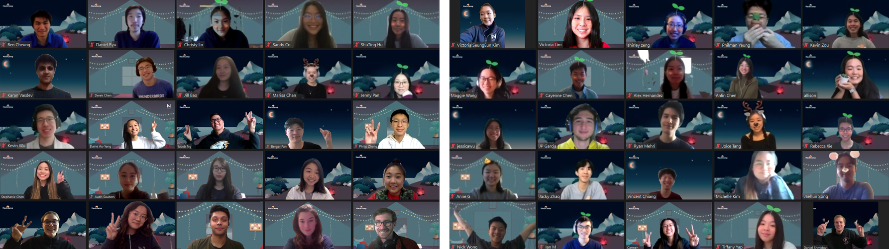
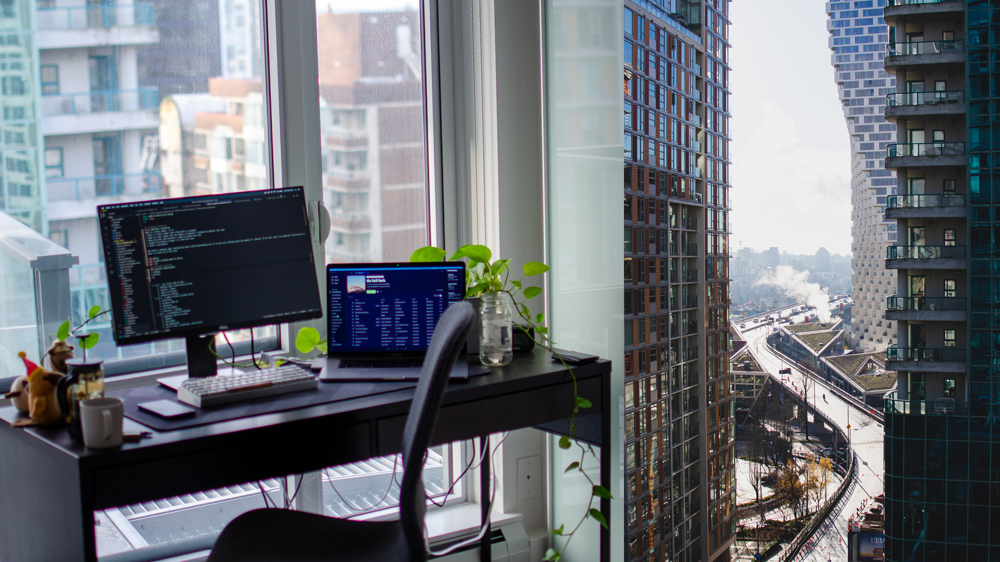

A year of ‘almosts’
2020 is:
- about 9.5 times longer than a Rick Roll in seconds
- about 54 times longer than the number of minutes I listened to Spotify this year
- about how many contributions I made on GitHub this year
- roughly the amount of pages I’ve read this year
- almost a palindrome
Now there’s nothing super fascinating about almost-palindromes but it is also very fitting given the number of ‘almosts’ in my year. Here’s an imperfect recollection of what I’ve been up to this year.
nwPlus
I help to do event logistics at nwPlus! This year, Allison and Anne somehow convinced me to take on a director role for HackCamp (or what was previously known as UBC Local Hack Day).
To be completely frank, I had no clue what that really entailed and jumped into it head-first. Along the way, I struggled with figuring out how to effectively lead a team of 4 older teammates, balancing nwPlus with all my other commitments, and being confident in my work as director. We had a bunch of logistical wrenches thrown our way, from figuring out how to bring our hackathon to the virtual stage to and navigating an entire event rebrand. It was honestly amazing to have even been able to hold the event at all, let alone attract over 900+ registrations, 500+ attendees, 3.2k+ livestream viewers, and $1200 in donations to charities. To say I was completely blown away by the turnout would be a massive understatement. We didn’t get to hold the in-person event we were hoping for, but the next-best thing was almost just as good.
Post-HackCamp Feels
A poorly played game of Tetris
Due to a combination of poor planning, luck, and FOMO, I made the poor decision to take on an internship at Hootsuite along with the open-source fellowship at MLH, all the while trying to juggle my mental sanity and health. Spoiler alert: it was a bad idea.
My calendar ended up looking a lot like a poorly played game of Tetris as I tried to stack hackathon onto after-work social onto tech talk. Unfortunately in this version of Tetris, there was no line clearing when I fully packed a week. You don’t need more than two braincells to realize that a schedule like that just isn’t sustainable. I was often working upwards of 80+ hours a week and I felt like death. I think the lowest point of the summer was sitting on the couch after working an 8 hour day at Hootsuite followed by another 6 hours on fellowship things and realizing that I only had oatmeal in the morning.
In order to get through the summer, I had to develop healthier coping methods to deal with the stress, anxiety, and general lack-of-time-to-do-anything that came along with it. Though I by no means have claimed to have solved any of these things, I’ve found a few things to be really helpful in maintaining some semblance of mental sanity:
- Time Blocking — COVID had eliminated any physical boundaries I already had; no 15 minute transit to separate work and home, no physical walk required to go from home to school. As a result, everything started to meld together. If it only takes me 3 clicks to go from my club meeting to my work tickets, I can just work just a little longer, right? I found that time blocking really let me regain a little bit of control back in my life. I could tell myself to only spend x hours doing y. It had the added benefit of allowing me to actually block off time for myself and to enjoy life a little bit.
- Exercise — although I’ve known this fact for a while now, this is the year I’ve really decided to actually apply it to my life. Feeling like garbage? Go for a run to feel more like garbage for a good hour before feeling better! I’ve had the privilege of being really close to nature so I get to enjoy the subtle crunching of leaves and brisk autumn air with each step.
- Quality time with quality people — 2020 was not a kind year to most, myself included and I’m not going to pretend otherwise. However, the presence of a select few individuals in my life really helped to make the year slightly less of a dumpster fire. You know who you are :‘)
Independent living
I finally moved out from on-campus housing into my own place! I’ve definitely felt tinges of loneliness during the pandemic but I’ve learned to fill the silence with music, podcasts, reading, or questionable arts and crafts. I’ve also somehow managed to get by the past few months without giving myself food poisoning in my transition from campus food to homecooked food.
No fancy photos here but enjoy a few pictures of my workspace and the view from my balcony.
Home sweet 127.0.0.1
An imperfect retrospective
It would be sort of naive to try to list out everything that went well/didn’t go well this year. Too much happened this year to fully give each bit of my year the respect it deserves, so in the spirit of this ‘almost’ year, enjoy this ‘almost’ retrospective.
Things that sparked joy
- Surrounding myself with genuine people who care.
- Picking up old hobbies and books — Heraclitus said, “No man steps in the same river twice.” The second time around, both man and river are different than they were before. The paints and books are the same, but we change between reads and brushstrokes. The world changes, too. I’ve found it really rewarding to be able to pick up old hobbies like watercolour, crocheting, and reading and discover it for the second time.
- Exercising more and enjoying nature — not everyday you get to read during sunset at the top of a peak with some of your closest friends.
Things that didn’t spark to joy
- Learning to block out time better — although I did improve on this, I’ve definitely told myself “ah, another few hours couldn’t hurt” far too many times this year. I need to work on prioritizing my time more and saying no to things.
- Balancing intake and output — How does one balance learning/intake of information intake with processing and thinking about that information? This year felt like trying to drink information through a firehose and spitting it right back out using a paper straw. I’m trying to work on better processes for choosing what information to explore more and to spend more time thinking and marinating thoughts (see: exploit explore tradeoff). Tweet.
Goal setting
When writing up the first few drafts for this post, I realized that just having goals with cold hard numbers on them without any motivating reason feels very empty. I’m not setting these goals just to achieve some number, but rather to enjoy the act of doing it or to develop a habit. I had a conversation with Emre about this and he brought up Reversal Theory as a way to understand our motivations and goals. In particular, one of the four domains of Reversal Theory is the means-ends domain. Motivations in this domain lie somewhere on the telic to paratelic action scale.
Paratelic Goals
- Acknowledging my privilege and use it to help those who are less fortunate
- Have impact with my work, whether that be through writing, projects, or just conversations
- Lead a more physically healthy lifestyle
- Learn more about the world through a feedback loops of reading, writing, and talking to people
Telic Goals
- Donate 5% of pre-tax income to charity
- Reach 50k people through projects and blog posts
- Read 10 books
- Set aside 10 hours a week for personal projects, learning, and writing
- Be able to run from my apartment to Stanley Park and back (~10km) in one go
- Have 1:1s with 50 new people in 2021
I’ve been waiting almost 2 years to say this pun but,
hindsight is 2020.
(no I didn’t plan on releasing this right at midnight, I just take a long time to write)